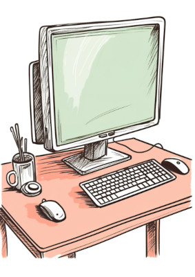

O computador é maior invenção do homem moderno !
Levando a técnoclogia para outro nivél.

Levando a técnoclogia para outro nivél.

Um componente eletrônico é usado para controlar ou amplificar o fluxo de corrente elétrica;. Como Substituiu as antigas válvulas a vácuo, permitindo que os computadores ficassem menores, mais rápidos, mais confiáveis e consumissem muito menos energia.
Um conjunto de circuitos eletrônicos miniaturizados em uma pequena placa de material semicondutor, geralmente silício, Consegue reunir bilhões de transistores em um único espaço microscópico, dando origem aos processadores atuais que executam os cálculos e comandos de forma veloz.
O software principal que gerencia o hardware do computador e fornece uma interface para o usuário e outros programas rodarem, Sem ele (como Windows, Linux ou macOS), o usuário não conseguiria interagir com a máquina ou executar aplicativos de forma prática.